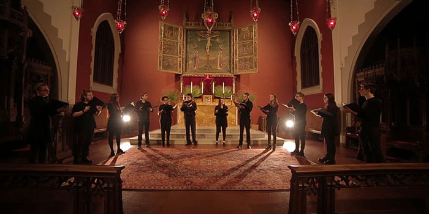

Ensemble Members
Katie Gruell
Katie Gruell is a junior working towards her BA in Voice with a Theatre Minor and studying with Dr. Tanya Kruse Ruck at the University of Wisconsin-Milwaukee. Katie received the Ruth DeYoung Kohler Scholarship for Artistic Excellence; she was also a finalist in the Schmidt Vocal Competition in Chicago. Katie covered the role of Dido in UWM's 2016 production of Dido & Æneas. In fall 2016, Katie won both the Classical and Musical Theatre categories in her age division in the Wisconsin NATS competition, and performed the role of Rosina from Barber of Seville in UWM's Opera Scenes production. In the spring she performed the role of Ninetta in UWM's Lá Périchole. This summer Katie was in Port Washington Summer Theatre's Production of Beauty & the Beast, and Mrs. Brill in DSHA Community Theatre Works' Mary Poppins. Earlier this summer Katie performed her first recital through the Kohler Foundation's Waelderhaus series.
Sarah Ann Mellström
Sarah Ann Mellström was born and raised in the small town of Northfield Minnesota. Her favorite activities as a child and adult were and remain singing, dancing, reading, writing and language. Sarah has been involved in musical ensembles and physical theater since an early age and is increasingly thrilled to improve the technique and passion required for sharing these gifts. Sarah departed for Austria at the age of seventeen and was entranced by ancient music, theater, and foreign languages. Since then she has lived and worked in seven different countries and now calls Milwaukee home. She is blessed to sing with Aperi Animam this coming year and assist in reviving a spiritual tradition which enlightens those who bear witness!
Ashley Sprangers
Ashley Sprangers is delighted to join Aperi Animam for the 2017-2018 season. Recently she has performed with Vox Antiqua and held a Professional Core soprano position in the Milwaukee Symphony Chorus. She is also active in musical theatre in the Milwaukee area, participating in recent productions of The Hunchback of Notre Dame at Waukesha Civic Theatre and performing as Mrs. Potts in Beauty and the Beast at West Performing Arts Center in New Berlin. When not performing Ashley enjoys cats, rescuing baby bunnies, and knitting/crocheting.
Brett Sweeny
Brett Sweeney has called Milwaukee “home" for almost a decade. He received his BFA in Vocal Performance from UW-Milwaukee and has been a part of various productions, pre and post-grad. His most recent performing credits include Sweeney Todd and La Cage aux Folles, both with the Skylight Music Theatre. Brett is also a recent AmSAT certified teacher of the Alexander Technique. In addition to supporting and exploring the rich artistic communities Milwaukee has to offer, Brett has a passion for travel, enjoys sharing a nice bottle of wine, and always takes a themed party very seriously.
Jennifer Jakubowski
Jennifer attended college at Carroll University receiving a degree in health and fitness, then attended UWM in pursuit of a Vocal Performance degree. Early Music has always been a deep love for her. She has had the privilege to sing backup for the Rolling Stones, and to travel to France and Italy, singing in Saint Marks and Notre Dame. She is honored to be in her fourth year singing with the Collegium Ladyes, and to have sung with several other talented groups in the Milwaukee area.